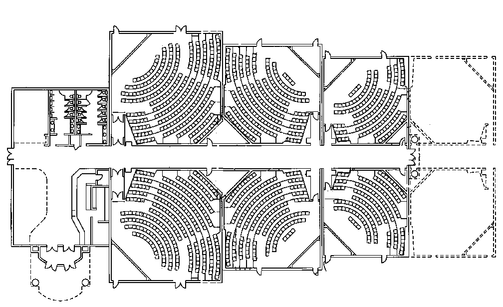
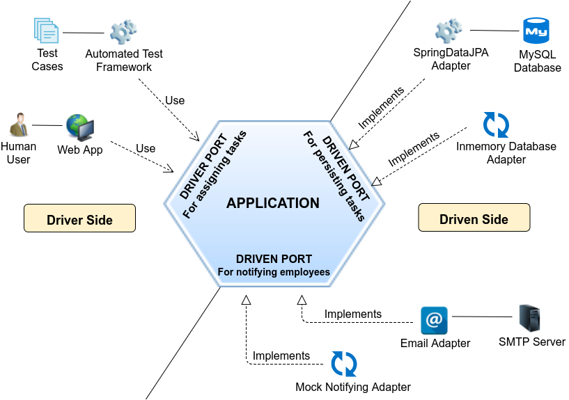

Clean architecture
An overview of the journey
made with ♥ by xaf
What is architecture?
The art and technique of designing and building, as distinguished from the skills associated with construction.
Good things to keep in mind when designing and building software
Development
Deployment
Operation
Maintenance
Keep options open
Device independence
- Development
- Deployment
- Operation
- Maintenance
- Keep options open
- Device independence
Screaming architecture

Hexagonnal

Onion (layered)

Clean arquitecture

SOLID principles can help to archive that
Wrap-up

https://xafardero.github.io/clean-architecture-overview